LUNÉA LAB
라일락빛 세럼 한 병을 위해 브랜드를 설정하고, 메인 비주얼부터 상품 정보 고시까지 8개 섹션으로 구성한 상세페이지입니다.
- TYPE
- 상세페이지
- CATEGORY
- 화장품 · 세럼
- SIZE
- 860px · 8섹션
- MOTION
- 모델 영상 · 그래프 GIF
가상 브랜드 작업입니다. 브랜드·제품·임상 수치·인증 문구는 모두 예시이며, 모델 사진은 AI로 생성했습니다.
1차 시안에서 최종안까지, 설계 과정 보기 ↓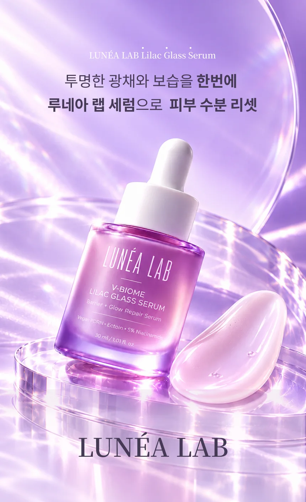
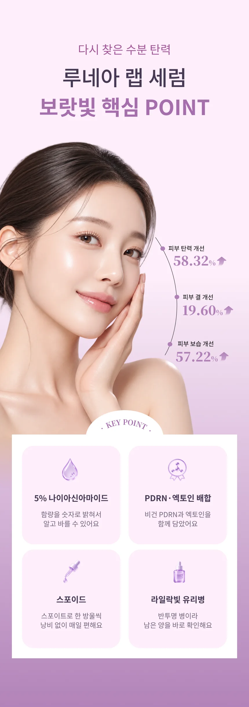
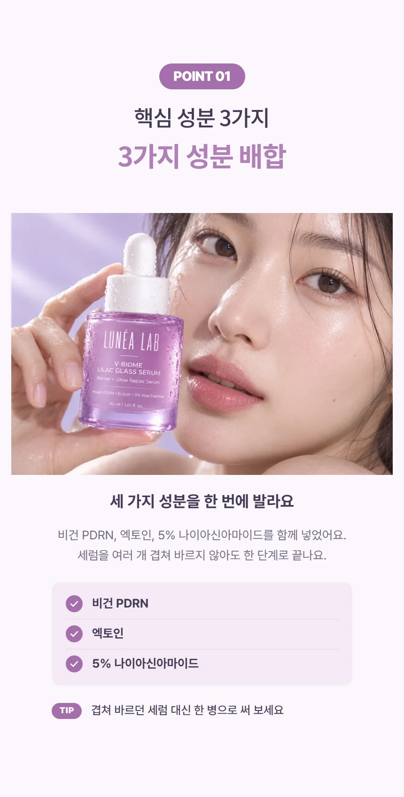
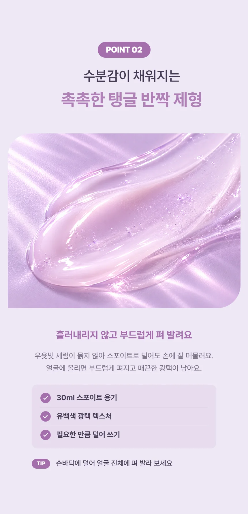
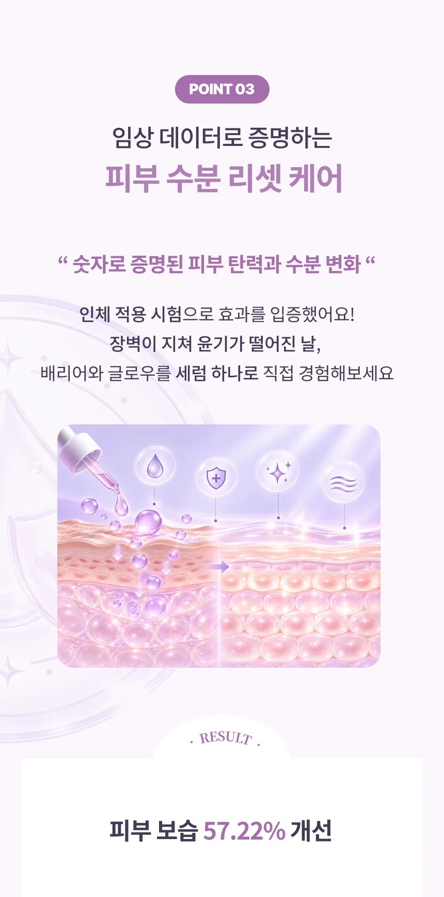
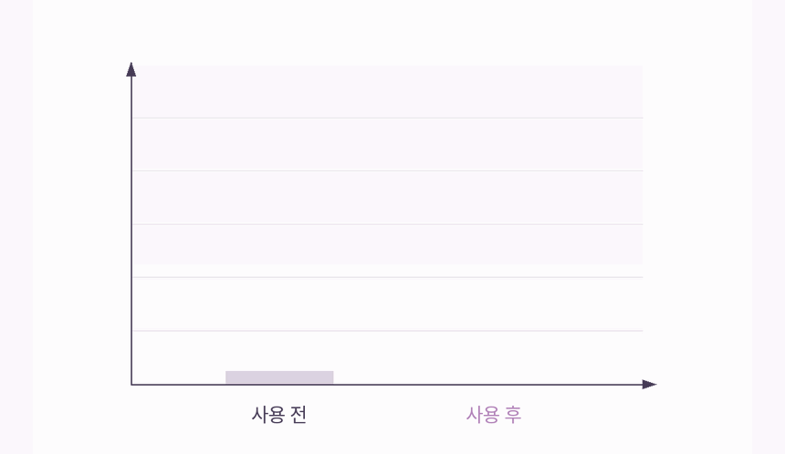
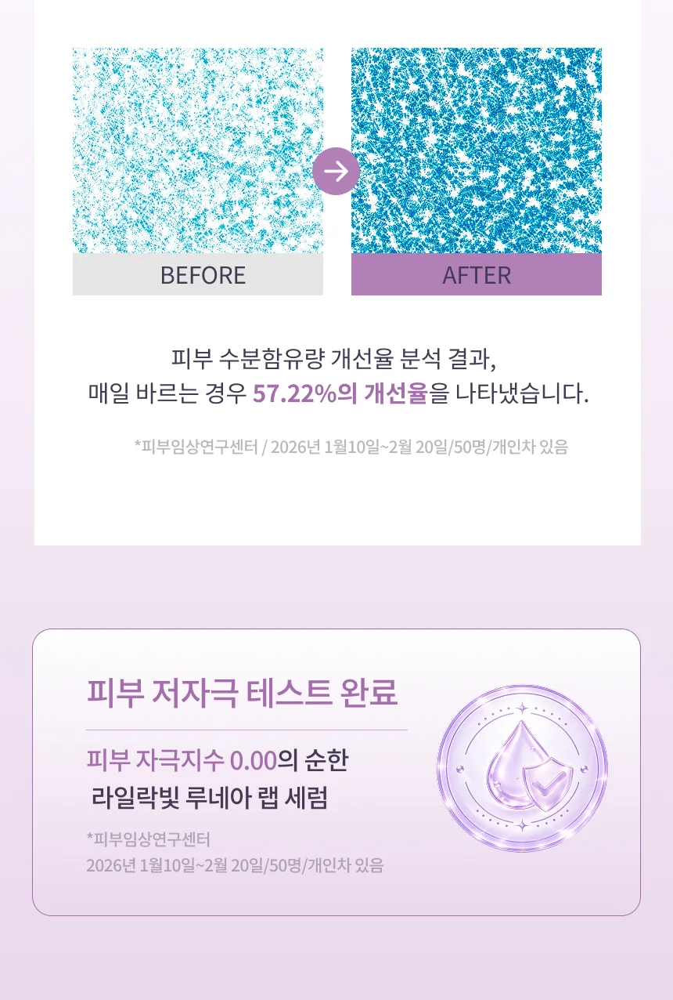
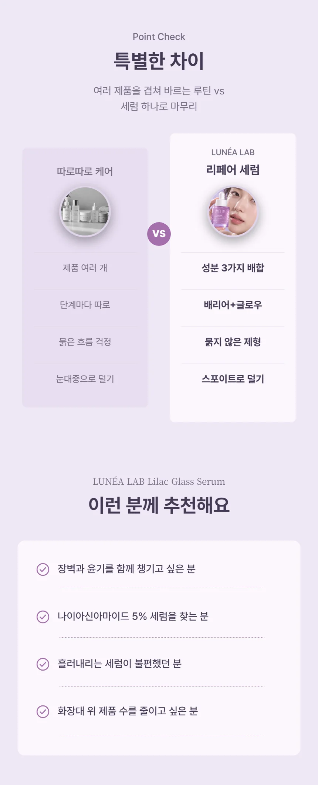
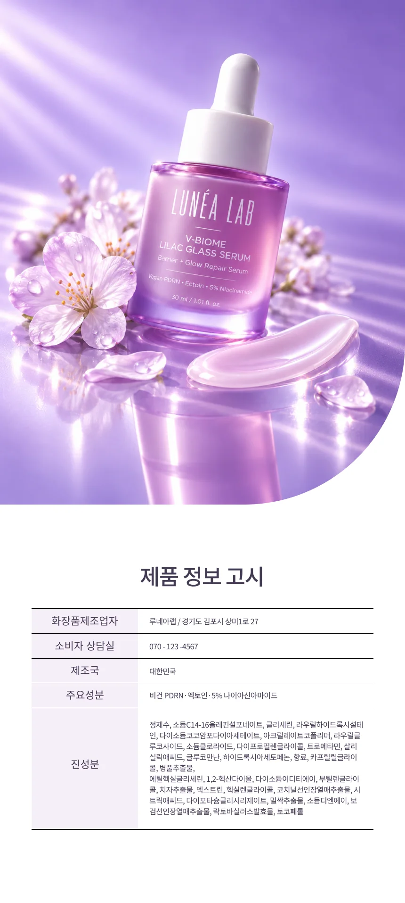
설계 과정 — 1차 시안에서 최종안까지
1차 시안을 “모바일에서 엄지로 넘기는 사람” 기준으로 다시 보고, 장식보다 구조부터 고쳤습니다. 가상 브랜드라 판매·전환 수치는 없고, 화면을 고친 근거만 정리했습니다.
1차 시안의 문제 3가지
- 1
제품이 박스 안에 갇힌 첫 화면
흰 배경 위 박스 안에 사진을 넣어 제품이 배경과 분리돼 보였고, 첫 화면에서 세럼의 질감이 드러나지 않았습니다.
- 2
시선이 두 번 꺾이는 우측 정렬 카피
로고와 카피는 오른쪽, 사진은 가운데에 있어 첫 화면 안에서 시선이 오른쪽 → 가운데로 흩어졌습니다.
- 3
먼저 읽을 곳이 없는 카드 4개
검은 선 아이콘이 라일락 톤과 따로 놀았고, 같은 무게의 카드 4개가 한 덩어리로 보여 우선순위가 없었습니다.
누가, 어떤 상황에서 보는가
- 누가
- 보습·광채 세럼을 몇 개 놓고 비교하는 20–30대
- 어디서
- 쇼핑앱·SNS 광고로 들어와 모바일에서 엄지로 빠르게 넘김
- 무엇을
- 몇 초 안에 “나한테 맞는 제품인지” 판단하고 남거나 떠남
가상 브랜드라 실제 고객 조사 대신 상세페이지를 설계하기 위해 세운 가정입니다.
3초 · 10초 · 30초에 답할 질문
머무는 시간마다 사용자가 던질 질문을 하나씩 정하고, 8개 섹션을 그 순서대로 놓았습니다. 어느 지점에서 떠나도 그때까지 본 내용만으로 제품이 설명되게 하는 것이 기준이었습니다.
1차 vs 최종 구조
문제가 컸던 두 영역(히어로, 체크 포인트)을 색과 사진을 빼고 구조만 남겨 비교했습니다. 동그라미 번호는 01의 문제 번호입니다.
히어로
체크 포인트
같은 영역, 1차 시안과 최종안
와이어프레임에서 정한 구조를 실제 시안에 적용한 결과입니다. 문제가 컸던 두 영역을 같은 크기로 나란히 놓았습니다.
01히어로
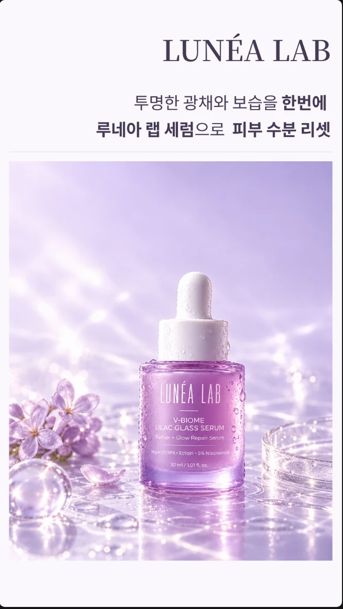
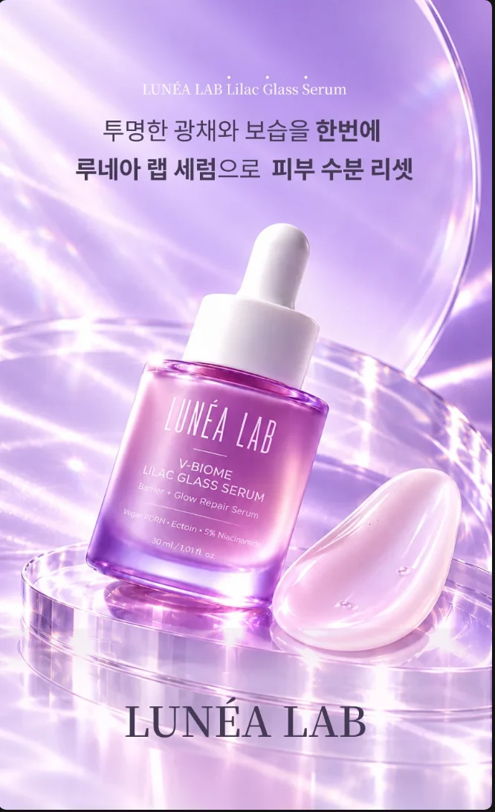
- 제품 사진이 박스 안에 들어가 있어 배경과 분리돼 보임
- 카피가 우측 정렬로 치우쳐 시선이 흩어짐
- 사진을 화면 전체로 키우고 제품을 비스듬히 크게 배치
- 젤 제형 텍스처를 더해 제품 특징을 첫 화면에서 보이게 함
- 카피를 중앙으로 모으고 브랜드명을 하단에 고정
02체크 포인트
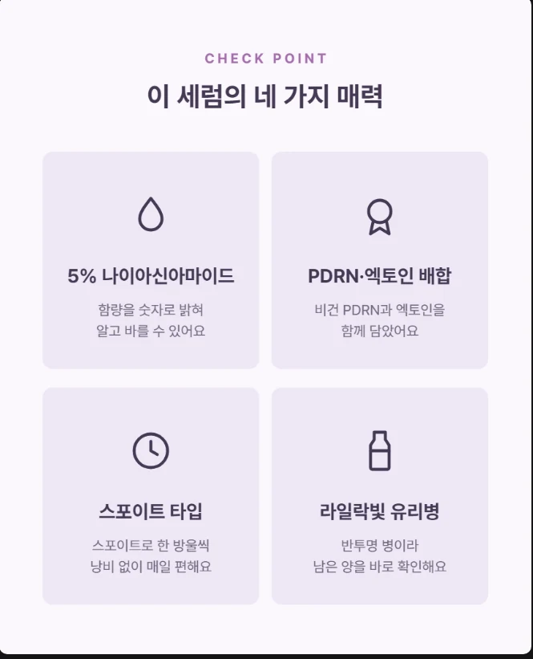
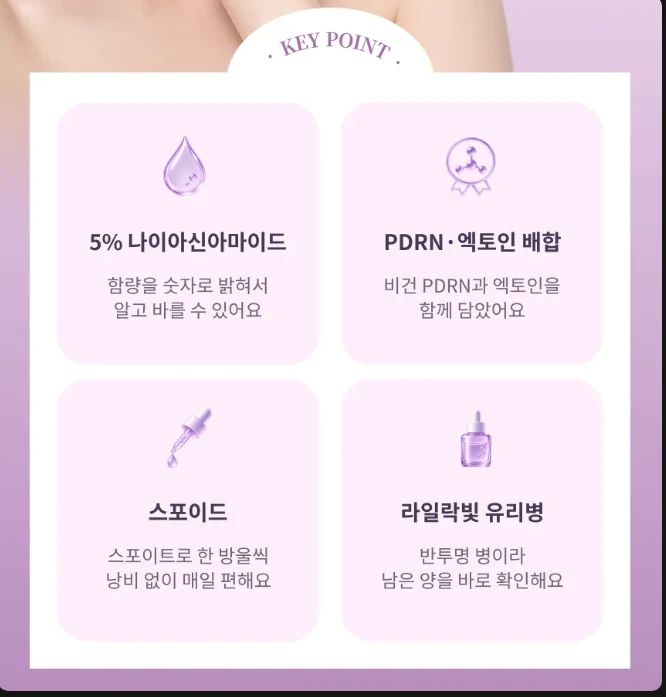
- 검은 선 아이콘이 제품의 라일락 톤과 따로 놂
- 카드 4개가 한 덩어리로 보여 우선순위가 없음
- 제품 톤에 맞춘 라일락 입체 아이콘으로 교체
- 제목을 짧게 줄이고(스포이트 타입 → 스포이드) 카드 배경을 연한 핑크로 구분
1차 시안과 최종안 모두 AI 생성 이미지와 Figma 편집 작업물이며, 가상 브랜드입니다.
자체 점검 체크리스트
5초 테스트 같은 사용자 테스트는 아직 하지 않았습니다. 아래는 최종안을 01–03에서 세운 기준으로 다시 확인한 제작자 자체 점검입니다.
- 첫 화면에 브랜드명, 제품, 효능 한 줄이 함께 보인다
- 첫 화면 안에서 시선이 가운데 한 줄로 내려간다
- 아이콘과 카드 배경이 라일락 톤 안에 있다
- KEY POINT 카드 제목이 짧은 명사로 한눈에 읽힌다
- 효능 수치 옆에 시험 조건 문구가 붙어 있다 (수치는 예시)
- 섹션 순서가 3초 · 10초 · 30초 질문 순서와 맞는다
- 5초 테스트로 첫 화면에서 기억에 남는 항목 확인
- 360px 폭에서 작은 설명 문구의 크기 확인
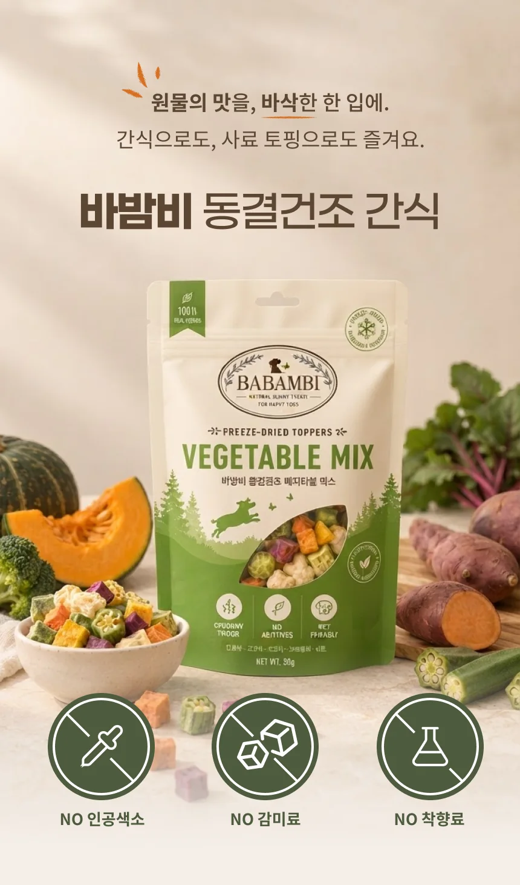